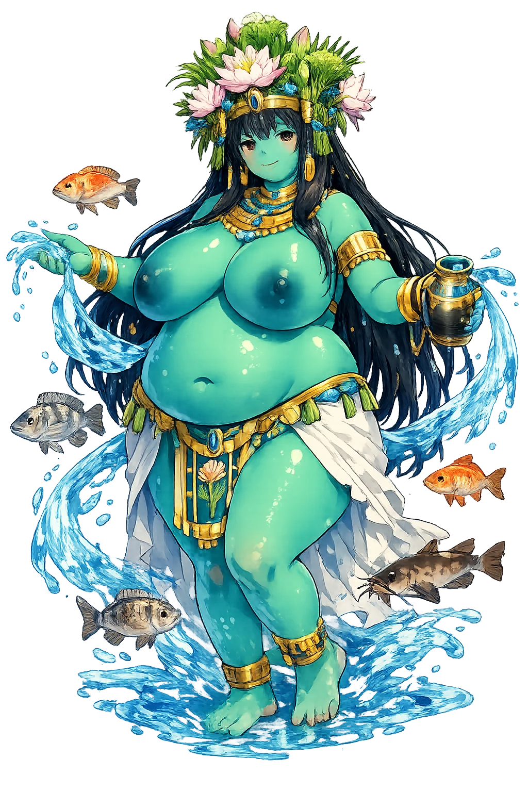
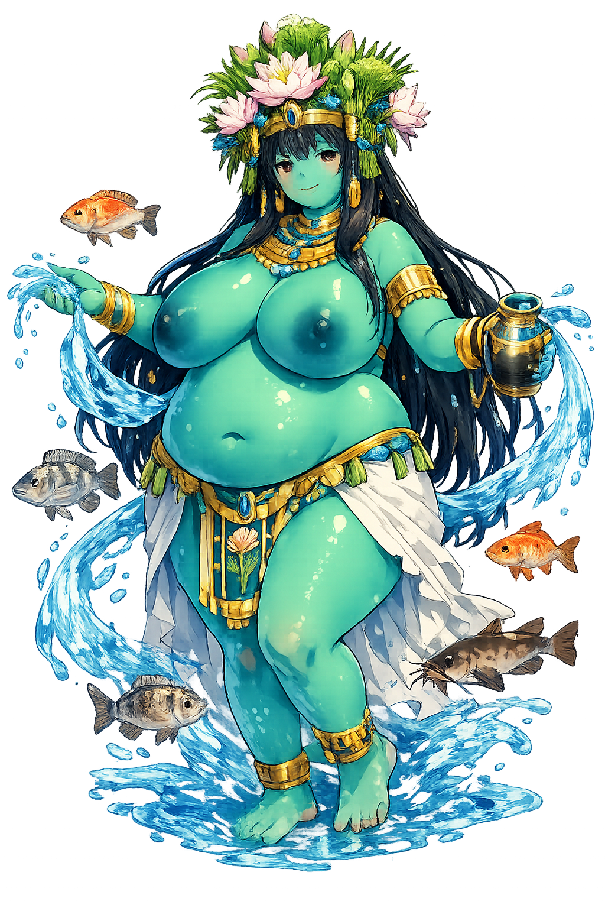

The Authentic Orthography
Nile, Inundation, Abundance · The Bringer of the Flood

Unicode restoration and ASCII comparison
𓎛𓂝𓊪𓏭𓈘
The name in its original Egyptian form. Ḥꜥpy (𓎛𓂝𓊪𓏭𓈘) is attested in the source tradition — “The Nile flood god Hapi; from ḥꜥpj”. Its Egyptological ain and alef letters and emphatic consonants carry the full phonetic and orthographic weight of the source tradition.
hp
Reduced to plain hp, the name loses everything that made it specific: Egyptological ain and alef letters and emphatic consonants. What remains is an ASCII string that machines can parse but that no longer speaks with its original voice.
Ḥꜥpy
The Unicode restoration recovers what ASCII flattened. Ḥꜥpy restores Egyptological ain and alef letters and emphatic consonants, returning the name to its original written dignity. The domain encodes to Punycode, but the browser displays the truth.
Ḥꜥpy.com → xn--py-rus6609e.com
The non-ASCII characters in Ḥꜥpy are encoded while the ASCII remains visible. To the DNS, it is Punycode. To humanity, it is Ḥꜥpy.
How Ḥꜥpy travels from ancient script to the modern URL
Egyptian Ḥꜥpy; the original vocalisation is unknown. The name denotes the inundation and the Nile-god.
How Ḥꜥpy was spoken
The Inundation, Abundance, and the Fat of the Land
ḥp is the Nile flood personified: the annual miracle on which all of Egypt hung, arriving as a blue-green, androgynous, heavy-bellied bringer of plenty. No temple was built to him — he needed none; the river was his temple, and its rising his epiphany.
The akhet season: the river rising to feed the black land — Egypt's single most sacred event.
He bears trays of fish, fowl, and produce — the land's abundance carried in his own arms.
The double Hapi tying papyrus and lotus around the windpipe-sign: the Two Lands knotted into one.
His measure at Elephantine: cubits of rise that set the year's tax and the year's hope.
Stories of Ḥꜥpy
ḥp has no adventures because he is not a character but an event: the flood. His mythology is hydrology made sacred — the river's rhythm given a face, a hymn, and a table of offerings.
The great Hymn to Hapi — a school text for a millennium, surviving in New Kingdom copies — calls him "lord of fish and fowl, maker of barley, creator of wheat," and says what every Egyptian knew: when he is high, the land rejoices; when he fails, "the whole land is in panic." No god in the hymn's Egypt is more feared for absence or praised for arrival.
On temple thrones across Egypt, two ḥp-figures — one crowned with Upper Egypt's lotus, one with the Delta's papyrus — knot the plants around the sema hieroglyph of the windpipe: sema-tawy, "uniting the Two Lands." The flood itself performs the political theology: one river, one country, one harvest.
Egyptians imagined the flood welling from subterranean caverns at the First Cataract — the realm of Khnum at Elephantine — and ḥp dwelling in the abyss with it. The theology matters less than the observation: the river rises at the solstice as Sirius returns, and the whole calendar, tax system, and liturgy bent to his timing.
ḥp is the god of the right amount. Too little and Egypt starved; too much and it drowned: his theology is the arithmetic of enough. Every flood-forecast, every reservoir, every rationing scheme since is his liturgy translated — the oldest question of abundance is not how to get more, but how to receive what comes.
Enter Extended Lore